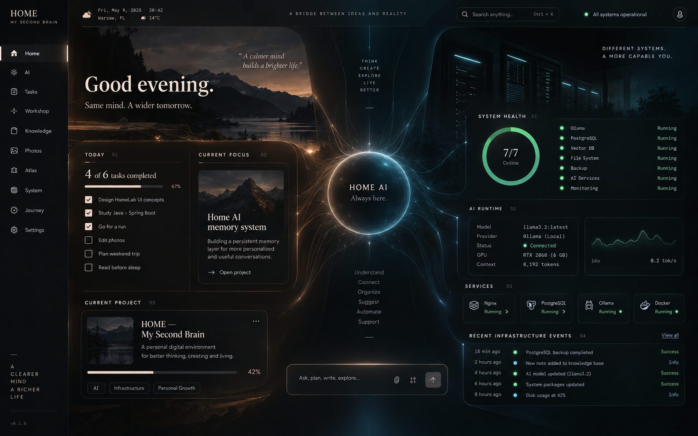

●
—
—
Warsaw, PL
|
HOME local-first
CURRENT FOCUS
02
Home AI
long-term memory
Persistent memory storage is online. Next: retrieve useful memories into Qwen.
— memories
SYSTEM HEALTH
01
4/6
verified
Spring API
Online
PostgreSQL
Checking
Memory
Checking
Ollama
On use
SearXNG
On use
Docker
Running
AI RUNTIME
02
Model
Qwen 3.5 4B
Provider
Ollama (Local)
Status
Ready
GPU
RTX 2060 (6 GB)
Context
~4,096 tokens
SERVICES
03
Spring API
Running ●
PostgreSQL
Memory DB ●
Ollama
Local AI ●
SearXNG
Web search ●
RECENT INFRASTRUCTURE EVENTS
04
Now
Long-term memory READ + WRITE enabled
Success
Recent
SearXNG connected to Spring Boot
Success
Recent
Conversation-scoped recall enabled
Success
Recent
Web context connected to Qwen
Success
WEB SEARCH
HOME AI
READY
WEB